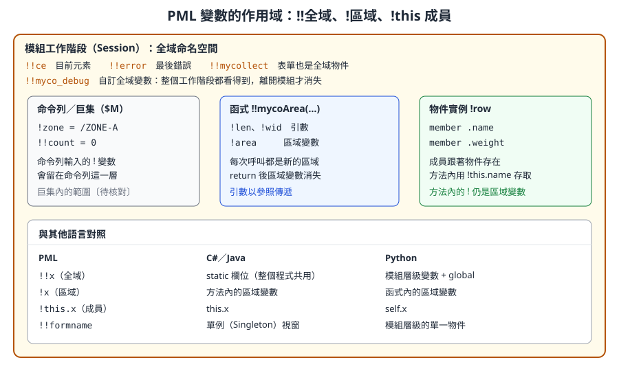
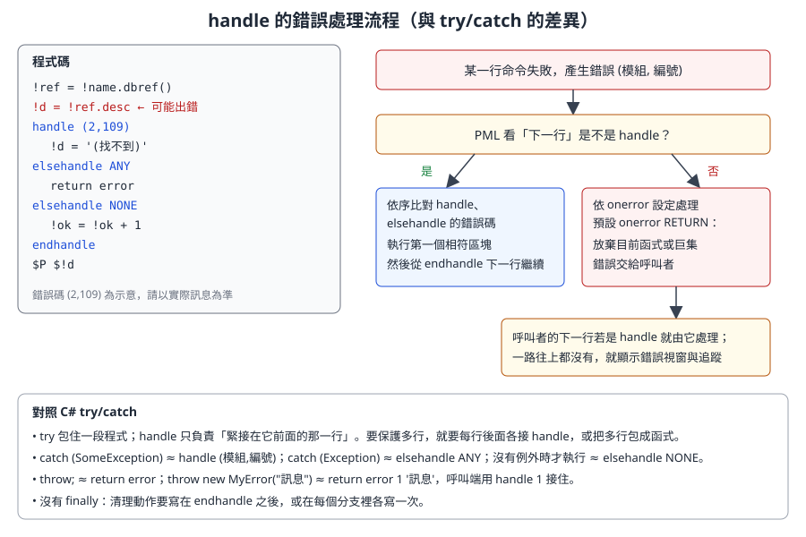

第 11 章 PML 語言核心
本章把 PML（Programmable Macro Language）當成一門程式語言來教：變數、型別、運算子、流程控制、字串、陣列、函式、物件、錯誤處理與巨集。每一節都附可讀的範例，並與 C#、Python 等常見語言對照，讓有程式經驗的讀者能快速建立正確的心智模型，也避開 PML 特有的陷阱。
語法依據 AVEVA E3D 2.1 的 PML Customisation User Guide 與 Software Customisation Reference Manual（help.aveva.com 公開頁面）。AVEVA Marine 12.1 的 PML 與 E3D 2.1 高度相同，但個別方法可能有版本差異。範例開頭標示「-- 示意」者為本課程自行撰寫、未在實機驗證的程式；請先在訓練專案中執行。互動練習可搭配 PML 互動練習頁。
11.1 學習目標
讀完本章，你應該能夠：
- 說明 PML1 與 PML2 的差別，並辨識一段程式屬於哪一種風格。
- 正確使用區域變數
!x、全域變數!!x與物件成員!this.x。 - 使用 STRING、REAL、BOOLEAN、ARRAY、DBREF、POSITION 等內建型別，並做型別轉換。
- 寫出
if、do（from/to、values、indices）、break、skip、golabel等流程控制。 - 運用字串與陣列的常用方法，並記得陣列從 1 開始。
- 定義函式與程序，理解引數以參照傳遞的後果。
- 定義一個 PML 物件：成員、方法、建構子與
!this。 - 用
handle／elsehandle／endhandle處理錯誤，並能自訂錯誤。 - 執行巨集，使用
$P、$!、$R等指令輸出與除錯。
11.2 PML1 與 PML2
PML 有兩代語法，而且在同一個系統裡並存：
| 面向 | PML1 | PML2 |
|---|---|---|
| 年代與定位 | 早期的巨集語言 | 在 PML1 之上擴充的物件導向版本 |
| 變數 | 幾乎都當字串處理，常用 var 指令設定 |
變數是有型別的物件，直接用 = 指定 |
| 取值方式 | 常用 $!x 把變數展開成文字再交給命令 |
直接在運算式中使用 !x |
| 典型語法 | var !list collect all EQUI for /ZONE-A |
!coll = object COLLECTION() |
| 介面 | 舊式表單 | setup form 表單、gadget、callback |
| 今天的用途 | 規則（Rules）、報表範本中的運算式；大量既有程式 | 新開發的函式、物件、表單 |
官方文件說明：PML2 是較新的擴充，特別適合表單與選單；但 PML1 並未被淘汰，部分工作（例如規則與報表範本）只能使用 PML1 運算式，有些任務用 PML1 反而更有效率。實務上你讀到的公司程式與官方程式，常常在同一個檔案裡混用兩者。
開發人員須知： 把 PML2 想成「主語言」，PML1 想成「內嵌的命令語言」。PML2 負責變數、邏輯、物件；需要對資料庫下命令時（例如
NEW EQUI、CLAIM），就寫一行 PML1 風格的命令，必要時用$!把變數值塞進命令裡。
11.3 三種執行方式
同一段邏輯可以用三種方式執行：
| 方式 | 寫法 | 適合 |
|---|---|---|
| 命令列直接輸入 | 在 Command Window 逐行輸入 | 試驗語法、查詢變數 |
| 巨集 | 寫成文字檔，$M 路徑 執行 |
一次性的批次命令、舊程式 |
| 函式／物件／表單 | 放在 PMLLIB，依名稱自動載入 |
正式工具（第 10 章） |
在命令列試試看：
!greeting = 'Hello'
!name = 'PML'
!msg = !greeting & ', ' & !name
q var !msg
$P $!msg
q var !msg 會顯示變數的型別與值；$P 把後面的文字印到命令列，而 $!msg 在印出前被換成變數內容。
11.4 基本語法規則
| 規則 | 說明 | 範例 |
|---|---|---|
| 註解 | -- 到行尾；$* 也是行註解（較舊的寫法） |
-- 這是註解 |
| 大小寫 | 關鍵字、變數名、方法名不分大小寫；字串內容區分大小寫 | !Name 與 !name 是同一個變數 |
| 字串分隔 | 單引號 '...' 或直線 |...|，前後必須成對 |
'abc'、|it's ok| |
| 一行一個敘述 | 不使用分號；if 不能寫成單行 |
見 11.8 節 |
| 物件與方法 | 用點號存取成員與方法 | !s.length()、!!ce.owner |
兩種字串分隔符號的用途：字串內容本身有單引號時，用 |...| 包住；或在回呼字串中需要再放一層字串時（第 13 章）也很好用：
!sql = |NAME eq 'P-101'|
!callback = |!this.show('ABC')|
專業提醒： 官方文件特別警告：分隔符號不成對時，後面很多行程式會被「吃進」字串裡而失效，錯誤訊息卻出現在很遠的地方。看到莫名其妙的語法錯誤，先檢查上方的引號是否成對。
11.5 變數與作用域
PML 的變數以驚嘆號開頭，不需要宣告型別，但值本身有型別（這點像 Python，不像 JavaScript 的隨意轉型）。
| 寫法 | 名稱 | 存活範圍 |
|---|---|---|
!x |
區域變數 | 目前的函式、方法或巨集；在命令列輸入則留在命令列這一層 |
!!x |
全域變數 | 整個模組工作階段，直到離開模組 |
!this.x |
物件成員 | 跟著物件（或表單）存在，只能在該物件的方法中以 !this 存取 |

圖 11-1 PML 變數的作用域與其他語言的對照。（本課程自繪）
幾個重要的全域變數是系統提供的：
| 全域變數 | 型別 | 用途 |
|---|---|---|
!!ce |
DBREF | 目前元素（Current Element），第 12 章的主角 |
!!error |
錯誤物件 | 最近一次錯誤的資訊，例如 !!error.text |
!!表單名稱 |
FORM | 每個已載入的表單都是一個全域物件 |
!!alert |
提示物件 | 顯示訊息框，例如 !!alert.message('...')、!!alert.error('...') |
開發人員須知： 全域變數在整個工作階段都存在，而且所有工具共用同一個命名空間。少用
!!；必須使用時加上公司前綴（!!mycoXxx）。跨方法共用的狀態，放在表單或物件的成員上，而不是全域變數。
11.6 型別
11.6.1 常用內建型別
| 型別 | 說明 | 建立方式 | 其他語言對照 |
|---|---|---|---|
| STRING | 字串 | 'abc'、|abc| |
string／str |
| REAL | 數值（沒有獨立的整數型別） | 42、3.14 |
double／float |
| BOOLEAN | 布林 | TRUE、FALSE（也接受 T、F、YES、NO） |
bool |
| ARRAY | 陣列，可混放不同型別 | ARRAY()、object ARRAY() |
List<object>／list |
| DBREF | 資料庫元素參照 | !!ce、/P-101、'/P-101'.dbref() |
指標或外鍵 |
| POSITION | 三維位置 | 'E 1000 N 2000 U 0'.position() |
自訂 Point3D 結構 |
| DIRECTION | 方向 | 'E'.direction() |
單位向量 |
| ORIENTATION | 姿態（三軸方向） | 'Y is N and Z is U'.orientation() |
旋轉矩陣 |
| FILE | 檔案 | object FILE('C:\temp\a.txt') |
FileInfo（第 16 章） |
| COLLECTION、EXPRESSION | 資料庫查詢 | object COLLECTION() |
查詢建構器（第 12 章） |
| 使用者自訂型別 | define object 定義 |
object MYCOTALLY() |
class |
位置、方向與姿態的字串寫法依第 4 章介紹的座標語法；字串轉成這些物件的方法（.position()、.direction()、.orientation()）列在官方 STRING 物件的方法表中。
11.6.2 查詢與轉換型別
!a = 42
!b = !a.string() -- REAL → STRING：'42'
!c = '3.5'.real() -- STRING → REAL：3.5
!d = 'TRUE'.boolean() -- STRING → BOOLEAN：TRUE
!e = !a.objecttype() -- 'REAL'
q var !b
| 轉換 | 方法 |
|---|---|
| 任何值 → 字串 | .string() |
| 字串 → 數值 | .real() |
| 字串 → 布林 | .boolean()（TRUE、T、YES、Y 為真；FALSE、F、NO、N 為假，不分大小寫） |
| 字串 → 元素參照 | .dbref() |
| 字串 → 位置／方向／姿態 | .position()、.direction()、.orientation() |
11.6.3 未設定的值
變數可能「存在但沒有值」，陣列也可能有「洞」。PML 提供這些檢查：
!x = REAL() -- 建立一個未設定值的 REAL 變數
if (unset(!x)) then
$P x 尚未設定
endif
!ref = !!ce.owner
if (badref(!ref)) then -- 參照未設定或無法導覽
$P 沒有有效的擁有者
endif
開發人員須知： PML 沒有
null這個字，但有 UNSET 的概念。讀資料庫屬性時常會遇到未設定的值，直接拿去運算會出錯。對可能為空的值先檢查，就像 C# 檢查null。
11.7 運算子
| 類別 | PML | C#／Python 對照 | 備註 |
|---|---|---|---|
| 指定 | = |
= |
只用於指定 |
| 相等、不等 | eq、ne |
==、!= |
不能寫 == |
| 大小比較 | gt、lt、ge、le |
>、<、>=、<= |
論文程式中的 Geq、Leq 與 ge、le 同義〔待核對〕 |
| 邏輯 | and、or、not |
&&、||、! |
! 在 PML 是變數前綴，不是否定 |
| 算術 | +、-、*、/ |
同 | 數值一律是 REAL |
| 字串串接 | & |
+ |
'A' & 'B' 得 'AB'；& 會把數值轉成字串 |
| 分組 | ( ) |
同 | if 的條件必須用括號 |
-- 示意：運算子綜合範例
!len = 1200
!wid = 800
!area = !len * !wid / 1000000 -- 0.96（平方公尺）
!isBig = !area gt 0.5 and !len ge 1000
!label = 'Area = ' & !area & ' m2' -- & 會轉字串
if (!isBig and not (!label eq '')) then
$P $!label
endif
短路求值： 官方文件說明，當結果已經確定時，運算式不會強迫評估未設定的變數。例如 !trueValue or !unsetValue 與 !falseValue and !unsetValue 都不會因為 !unsetValue 未設定而出錯。可以利用這點寫出「先檢查再使用」的條件。
專業提醒： 字串比較
eq對大小寫敏感與否，請在公司版本實測〔待核對〕。需要不分大小寫時，明確使用!a.eqnocase(!b)或把兩邊都.upcase()再比較，程式意圖最清楚。
11.8 流程控制
11.8.1 if／elseif／else
if (!bore ge 200) then
!class = 'LARGE'
elseif (!bore ge 50) then
!class = 'MEDIUM'
else
!class = 'SMALL'
endif
規則：
- 條件必須是 BOOLEAN。
if (1)、if ('TRUE')都是錯的；需要時用.boolean()轉換。 - 關鍵字是
elseif（一個字），不是else if。 - 不能寫成單行。官方文件把
if (!n lt 0) then !neg = TRUE endif明確標為錯誤。
11.8.2 do 迴圈
PML 只有一個迴圈關鍵字 do，搭配不同子句：
| 形式 | 語法 | 對照 |
|---|---|---|
| 計數 | do !i from 1 to 10 by 2 … enddo |
for (i = 1; i <= 10; i += 2) |
| 走訪值 | do !v values !arr … enddo |
foreach (var v in arr) |
| 走訪索引 | do !n indices !arr … enddo |
for i in range(len(arr))（從 1 開始） |
| 無限迴圈 | do … enddo |
while (true)，要搭配 break |
from 預設 1、to 預設無限大、by 預設 +1；迴圈變數是 REAL，結束後保留最後的值。
-- 示意：三種 do 的寫法
!names = ARRAY()
!names.append('P-101A')
!names.append('P-101B')
!names.append('HX-201')
do !i from 1 to !names.size()
$P 第 $!i 個：$!names[$!i]
enddo
do !n values !names
$P 名稱：$!n
enddo
do !k indices !names
!names[!k] = !names[!k].lowcase()
enddo
專業提醒： 開源範例
mycollect.pmlfrm使用do !e index !results。官方文件記載的關鍵字是indices；index是否為可接受的寫法，請在公司版本確認〔待核對〕。新程式建議統一寫indices。
11.8.3 break、skip 與 golabel
-- 示意：找到第一個大於 100 的數就停止
!total = 0
do !n values !numbers
skip if (!n lt 0) -- 略過負數，直接進入下一圈（同 continue）
break if (!n gt 100) -- 跳出迴圈（同 break）
!total = !total + !n
enddo
| PML | 對照 |
|---|---|
break、break if (條件) |
break |
skip、skip if (條件) |
continue |
golabel /名稱 與 label /名稱 |
goto（少用，主要出現在舊程式與 onerror GOLABEL） |
官方說明 break if 的條件可以是任何結果為 BOOLEAN 的運算式（包含函式呼叫），括號可省略但建議保留。
11.9 字串處理
PML 的字串是物件，處理方式都是呼叫方法。下表整理官方 STRING 物件中最常用的方法（位置從 1 開始）：
| 方法 | 回傳 | 範例 | 結果 |
|---|---|---|---|
.length() |
REAL | 'ABCDE'.length() |
5 |
.substring(起點, 長度) |
STRING | 'ABCDE'.substring(2, 3) |
'BCD' |
.substring(起點) |
STRING | 'ABCDE'.substring(4) |
'DE' |
.upcase()、.lowcase() |
STRING | 'Pump'.upcase() |
'PUMP' |
.trim() |
STRING | ' A '.trim() |
'A' |
.split() |
ARRAY | 'A B C'.split() |
['A','B','C']（壓縮多個空白） |
.split(分隔字) |
ARRAY | 'A,,C'.split(',') |
['A','','C']（不壓縮） |
.part(第 n 段, 分隔字) |
STRING | 'A-B-C'.part(2, '-') |
'B' |
.match(子字串) |
REAL | 'P-101A'.match('101') |
3（找不到為 0） |
.matchwild(樣式) |
BOOLEAN | 'P-101A'.matchwild('P-*') |
TRUE |
.replace(舊, 新) |
STRING | 'P_101'.replace('_', '-') |
'P-101' |
.after(子字串)、.before(子字串) |
STRING | '/Z-ER/P-101'.after('/Z-ER/') |
'P-101' |
.occurs(子字串) |
REAL | 'A-B-C'.occurs('-') |
2 |
.empty() |
BOOLEAN | ''.empty() |
TRUE |
.real()、.boolean()、.dbref() |
對應型別 | '12.5'.real() |
12.5 |
.eqnocase(另一字串) |
BOOLEAN | 'abc'.eqnocase('ABC') |
TRUE |
-- 示意：解析「區域-系統-序號」格式的設備名稱
!tag = 'ER-FW-101A'
!parts = !tag.split('-')
if (!parts.size() eq 3) then
!zone = !parts[1]
!system = !parts[2]
!seq = !parts[3]
$P 區域 $!zone、系統 $!system、序號 $!seq
else
$P 名稱格式不符：$!tag
endif
11.10 陣列
11.10.1 基本特性
PML 陣列與多數語言最大的不同：索引從 1 開始。官方文件還補充：索引 0 雖然允許，但許多陣列功能會忽略第 0 個元素，不建議使用；負數索引已不允許。
!a = ARRAY() -- 空陣列
!a[1] = 'first' -- 直接指定也會建立元素
!a.append('second') -- 加到最後
!a[10] = 'tenth' -- 允許有洞（稀疏陣列）
q var !a.size() -- 已定義元素的個數：3
q var !a[5] -- 未定義
| 特性 | PML | C#／Python |
|---|---|---|
| 第一個元素 | !a[1] |
a[0] |
| 最後一個元素 | !a[!a.size()] 或 !a.last()（無洞時） |
a[^1]、a[-1] |
| 元素型別 | 可混放，甚至放物件 | 依宣告或任意 |
| 稀疏 | 允許有洞 | 不允許（list） |
size() |
已定義元素數 | Count／len() |
專業提醒： 因為允許有洞，
size()是「已定義元素的個數」，不一定等於最大索引。對有洞的陣列，用do !k indices !a走訪已定義的索引，或先.compress()移除未定義元素再處理。
11.10.2 常用方法
| 方法 | 作用 |
|---|---|
.append(值)、.appendarray(陣列) |
加到最後 |
.insert(索引, 值) |
插入並重新編號 |
.remove(n)、.removefirst()、.removelast() |
移除並回傳，其餘重新編號 |
.size()、.empty() |
元素數、是否為空 |
.first()、.last() |
第一個、最後一個 |
.find(值)、.findfirst(值) |
找出所有位置、第一個位置（找不到為 UNSET） |
.sort() |
原地遞增排序 |
.sortunique() |
排序並去除重複 |
.unique() |
去除重複 |
.sortedindices() |
回傳排序後的索引順序，原陣列不變 |
.reindex(索引陣列) |
依索引陣列重新排列 |
.union()、.intersect()、.difference() |
集合運算 |
.from(起點, 個數)、.to(終點) |
取出片段 |
.clear()、.compress() |
清空、移除未定義元素 |
11.10.3 用 sortedIndices 排序「平行陣列」
PML 沒有內建的字典或結構陣列排序，常見技巧是用 sortedindices() 取得順序，再套用到多個平行陣列：
-- 示意：依重量排序設備名稱
!names = ARRAY()
!weights = ARRAY()
!names.append('P-101A')
!weights.append(850)
!names.append('HX-201')
!weights.append(2300)
!names.append('T-301')
!weights.append(120)
!order = !weights.sortedindices() -- 依重量由小到大的索引順序
!names.reindex(!order)
!weights.reindex(!order)
do !k indices !names
$P $!names[$!k] $!weights[$!k] kg
enddo
11.10.4 多維陣列與物件陣列
!grid = ARRAY()
!grid[1][1] = 'Name'
!grid[1][2] = 'Desc'
!grid[2][1] = 'P-101A'
!grid[2][2] = 'FW Pump'
q var !grid[2][1]
「陣列的陣列」就是表格，第 13 章的 MyCollect 範例正是用這種結構把資料列交給表格控制項。陣列元素也可以是自訂物件（11.12 節）。
11.11 函式與程序
11.11.1 定義與呼叫
函式寫在 .pmlfnc 檔，檔名等於函式名稱（第 10 章）。官方範例：
define function !!Area( !Length is REAL, !Width is REAL ) is REAL
!Area = !Length * !Width
return !Area
endfunction
!SurfaceArea = !!Area(7, 6) -- 42
| 部分 | 說明 |
|---|---|
define function !!名稱(...) |
函式一定是全域名稱（!!） |
!參數 is 型別 |
引數必須宣告型別：REAL、STRING、BOOLEAN、ARRAY、DBREF、物件型別，或 ANY |
結尾的 is REAL |
回傳型別；省略時就是「程序」 |
return 值 |
回傳；函式內的引數就像區域變數 |
11.11.2 程序（沒有回傳值）
省略回傳型別的函式稱為 PML 程序（Procedure），以 call 呼叫，結果透過「輸出引數」傳回：
define function !!AreaProc( !Length is REAL, !Width is REAL, !Result is REAL)
!Result = !Length * !Width
endfunction
!SurfaceArea = REAL() -- 輸出引數必須先存在
call !!AreaProc(7, 6, !SurfaceArea)
q var !SurfaceArea -- 42
官方說明：即使沒有引數，括號也不能省略（call !!Initialise()）；把程序的結果直接指定給變數會出錯。
11.11.3 引數是參照，不是複本
這是 PML 與多數語言最不同、也最危險的一點。官方文件說明：引數是對外部值的參照，等於原變數的另一個名字；在函式內修改引數，呼叫端的變數也會跟著改變。
-- 示意：引數以參照傳遞
define function !!mycoShout(!text is STRING) is STRING
!text = !text.upcase() -- 這行也改到了呼叫端的變數
return !text
endfunction
!name = 'pump'
!loud = !!mycoShout(!name)
q var !name -- 也變成 'PUMP'
| 語言 | 預設傳遞方式 |
|---|---|
| C# | 值型別傳值；參照型別傳參照的複本；需 ref 才能改變呼叫端變數 |
| Python | 傳物件參照；重新指定參數不影響呼叫端 |
| PML | 參照：重新指定參數也會改到呼叫端的變數 |
建議：不要修改輸入引數。需要處理時先複製到區域變數：!t = !text.upcase()。另外，呼叫端傳入常數（例如字面字串）給會被修改的引數會出錯，官方文件把這種寫法標為錯誤。
11.12 物件導向：define object
11.12.1 官方範例：LIFE 物件
官方用一個極簡的物件說明所有概念：
define object LIFE
member .Answer is REAL
endobject
define method .Life()
!This.Answer = 42
endmethod
define method .Answer() is REAL
return !This.Answer
endmethod
define method .Answer( !Value is REAL)
!This.Answer = !Value
endmethod
!Marvin = object LIFE() -- 自動呼叫建構子 .Life()
!Number = !Marvin.Answer() -- 42
!Marvin.Answer(40) -- 呼叫有引數的版本
!Number = !Marvin.Answer() -- 40
| 概念 | PML | C# 對照 |
|---|---|---|
| 類別定義 | define object 名稱 … endobject |
class 名稱 { } |
| 欄位 | member .名稱 is 型別 |
欄位宣告 |
| 方法 | define method .名稱(...)，寫在 endobject 之後、同一檔案 |
方法 |
| 建構子 | 與型別同名、無引數的方法 | 無參數建構子 |
| 有引數的建構子 | 與型別同名、引數相符的方法，例如 object LIFE(40) |
多載建構子 |
| 多載 | 同名方法、不同引數（.Answer() 與 .Answer(!Value)） |
方法多載 |
| 自己 | !this |
this |
| 建立實例 | object LIFE() |
new Life() |
| 呼叫同物件的其他方法 | !this.Answer(!Value) |
this.Answer(value) |
注意：沒有繼承、沒有存取修飾詞（所有成員都是公開的）、沒有介面宣告。新增方法後要執行 pml reload object LIFE（第 10 章）。
11.12.2 範例：一個小型統計物件 MYCOTALLY
PML 沒有字典（Dictionary／dict）。下面用平行陣列實作一個「分類計數器」，可以用來統計某 ZONE 下各種元素型別的數量。檔名 mycotally.pmlobj：
-- 示意：mycotally.pmlobj 分類計數器
define object MYCOTALLY
member .keys is ARRAY
member .counts is ARRAY
endobject
-- 建構子：初始化兩個平行陣列
define method .mycotally()
!this.keys = ARRAY()
!this.counts = ARRAY()
endmethod
-- 把某個鍵的計數加 1
define method .add(!key is STRING)
!pos = !this.keys.findfirst(!key)
if (unset(!pos)) then
!this.keys.append(!key)
!this.counts.append(1)
else
!this.counts[!pos] = !this.counts[!pos] + 1
endif
endmethod
-- 查詢某個鍵的計數，沒有則回傳 0
define method .count(!key is STRING) is REAL
!pos = !this.keys.findfirst(!key)
if (unset(!pos)) then
return 0
endif
return !this.counts[!pos]
endmethod
-- 依鍵排序後輸出成文字陣列
define method .report() is ARRAY
!order = !this.keys.sortedindices()
!lines = ARRAY()
do !k values !order
!lines.append(!this.keys[!k] & ' : ' & !this.counts[!k])
enddo
return !lines
endmethod
使用方式（唯讀，只讀取型別）：
-- 示意：統計目前元素底下各型別的數量
!tally = object MYCOTALLY()
!coll = object COLLECTION()
!coll.scope(!!ce)
!all = !coll.results()
do !e values !all
!tally.add(!e.type.string()) -- 與開源範例相同，以 .string() 確保是 STRING
enddo
!lines = !tally.report()
do !line values !lines
$P $!line
enddo
逐段解說：
| 段落 | 重點 |
|---|---|
member .keys is ARRAY |
成員宣告型別，建構子中再給初值 |
.mycotally() |
與型別同名、無引數，就是建構子；object MYCOTALLY() 時自動執行 |
.findfirst(!key) |
官方 ARRAY 方法，找不到時回傳 UNSET，所以用 unset() 檢查 |
.count() 有兩個 return |
方法可以提早回傳，與函式相同 |
.report() 用 sortedindices() |
不改變內部陣列順序，只產生排序後的輸出 |
使用端沒有 type() |
COLLECTION 沒指定型別時收集範圍內所有元素（第 12 章） |
先存 !all 再走訪 |
把方法結果先放進變數再 do ... values，可讀性較好，也方便用 q var 檢查 |
開發人員須知： 物件很適合把「狀態 + 操作」包在一起，讓表單程式碼保持簡潔。第 13 章的表單本身也是物件：
setup form宣告成員與 gadget，define method定義行為，概念完全相同。
11.13 錯誤處理：handle
11.13.1 錯誤長什麼樣子
官方以使用不存在的變數為例：
(46,28) ERROR - Variable FRED not defined
括號中的第一個數字代表偵測到錯誤的模組或程式區段，第二個數字是錯誤編號。錯誤發生時通常有三個效果：跳出需要使用者確認的警示框、在命令列輸出錯誤訊息與呼叫追蹤、放棄目前正在執行的巨集與函式。
11.13.2 handle 區塊
-- 某行命令產生錯誤 (46, 28)
handle (46, 27)
-- 不符合，不執行
elsehandle (46, 28)
-- 符合，執行這裡
elsehandle ANY
-- 其他任何錯誤
elsehandle NONE
-- 沒有錯誤時才執行
endhandle
-- 處理完後從這一行繼續
規則（依官方文件）：
- 錯誤發生時，PML 看下一個要處理的命令是不是相符的
handle。是的話，不輸出錯誤，改為執行該區塊，結束後從endhandle下一行繼續。 elsehandle依序比對；ANY接住其他任何錯誤；NONE只在沒有錯誤時執行。- 下一行不是
handle：依onerror設定處理。預設onerror RETURN，放棄目前的函式或巨集，錯誤交給呼叫者；呼叫者的下一行若是handle就由它處理，一路往上。

圖 11-2 handle 的錯誤處理流程。注意 handle 只負責緊接在它前面的那一行。（本課程自繪）
11.13.3 與 try/catch 對照
| C# | PML | 差異 |
|---|---|---|
try { 多行 } |
沒有；handle 只保護它前面那一行 |
要保護多行，就把多行包成函式，在呼叫函式的那行後面接 handle |
catch (特定例外) |
handle (模組, 編號) |
以錯誤碼比對，不是以型別 |
catch (Exception) |
elsehandle ANY 或 handle ANY |
|
| 沒有例外才執行 | elsehandle NONE |
C# 沒有直接對應 |
throw; |
return error |
把錯誤再丟給呼叫者 |
throw new X("msg") |
return error 1 '訊息' |
使用者自訂錯誤編號 |
catch (X) 接自訂錯誤 |
handle 1 |
專用寫法 |
finally |
沒有 | 清理動作寫在 endhandle 之後 |
其他官方提供的寫法：
| 寫法 | 作用 |
|---|---|
q var !!error |
在 handle 區塊中查看錯誤內容 |
return error noalert |
再丟出錯誤，但不顯示警示框 |
return error 1 NOALERT |
產生自訂錯誤且不顯示警示框 |
onerror GOLABEL /標籤 |
未處理的錯誤跳到標籤；標籤後第一行必須是 handle |
onerror CONTINUE |
壓制錯誤與警示框（非互動測試用，官方警告可能有無法預期的效果） |
onerror PAUSE |
錯誤時暫停，可輸入命令查看狀態，$M+ 繼續；不要留在正式程式中 |
11.13.4 實用範例：安全讀取元素描述
-- 示意：安全讀取名稱對應元素的 DESC
define function !!mycoSafeDesc(!name is STRING) is STRING
!ref = !name.dbref()
handle ANY
return '(名稱無效)'
endhandle
if (badref(!ref)) then
return '(找不到元素)'
endif
!d = !ref.desc
handle ANY
return '(無法讀取 DESC)'
endhandle
return !d
endfunction
每一個可能失敗的動作後面都接了自己的 handle，失敗時回傳說明文字而不是讓整個工具中斷。實際錯誤碼可以先用 handle ANY 加 q var !!error 觀察，再改寫成特定錯誤碼。
專業提醒： 開源範例
mycollect.pmlfrm中，import 'GridControl'後面接handle (1000,0)，用來忽略「已經匯入過」的錯誤。這是官方範例也常用的慣用法：可預期、無害的錯誤，用特定錯誤碼接住並忽略；其他錯誤則讓它傳出去，不要一律handle ANY吞掉。
11.14 巨集與除錯指令
11.14.1 巨集
巨集是一連串命令的文字檔，以 $M 執行：
$M D:\Company\pmllib\myco\macros\mycoinit.pmlmac
官方說明巨集可以接收引數：引數寫在巨集名稱後面、以空白分隔，在巨集內以 $1、$2 … 取用（最多 9 個）。從 PML 程式呼叫巨集時，引數必須是字串，PML 變數要以 $ 展開成文字。
11.14.2 $ 開頭的指令
| 指令 | 作用 | 範例 |
|---|---|---|
$P 文字 |
把文字印到命令列 | $P 開始處理 |
$!變數 |
把變數值展開成文字，嵌入命令或 $P |
$P 名稱：$!name、NEW EQUI $!newName |
$M 檔案 |
執行巨集 | 見上 |
$R100、$R0 |
開啟、關閉 PML 追蹤（等同 PML TRACE ON／OFF） |
追蹤時每一行執行的程式都會印出行號 |
$HR |
查看 $R 的線上說明 |
|
$* |
註解 | $* 舊式註解 |
$M-、$M+ |
暫停、繼續巨集執行（搭配 onerror PAUSE） |
11.14.3 $! 展開：PML1 與 PML2 的橋樑
PML2 運算式直接使用變數（!a = !b + 1）；但資料庫命令是 PML1 語法，命令解析器看到的是文字。這時就要用 $! 把變數「貼」進命令：
!newName = '/T-EQUI-001'
NEW EQUI $!newName -- 命令看到的是：NEW EQUI /T-EQUI-001
對照：$! 就像 shell 的 $var 變數展開，或 C# 的字串內插 $"NEW EQUI {newName}" 之後再交給命令直譯器。也因為是「文字替換」，變數內容若含空白或特殊字元，可能讓命令變成意料之外的樣子，使用前要先驗證內容。
11.14.4 查詢與追蹤
| 指令 | 作用 |
|---|---|
q var !x |
顯示變數型別與值 |
q var !!error |
顯示最後的錯誤 |
PML TRACE ON／PML TRACE OFF |
開關追蹤（也可在啟動前設定環境變數 PMLTRACE=ON） |
!!alert.message('...') |
跳出訊息框（會打斷使用者，除錯用 $P 較好） |
第 17 章會把除錯技巧整理成完整流程。
11.15 與其他語言對照總表
| 主題 | PML | C# | Python |
|---|---|---|---|
| 區域變數 | !x = 1 |
var x = 1; |
x = 1 |
| 全域變數 | !!x = 1 |
static 欄位 | 模組變數 |
| 相等 | eq |
== |
== |
| 不等 | ne |
!= |
!= |
| 邏輯否定 | not |
! |
not |
| 字串串接 | & |
+ |
+ |
| 字串字面 | 'a'、|a| |
"a" |
'a'、"a" |
| 陣列第一個 | !a[1] |
a[0] |
a[0] |
| 迴圈 | do !v values !a |
foreach |
for v in a |
| 繼續／跳出 | skip／break |
continue／break |
continue／break |
| 函式 | define function !!f(!a is REAL) is REAL |
static double F(double a) |
def f(a): |
| 引數傳遞 | 參照（會改到呼叫端） | 值或參照 | 物件參照 |
| 類別 | define object |
class |
class |
| 自己 | !this |
this |
self |
| 例外處理 | handle（只保護前一行） |
try/catch |
try/except |
| 拋出 | return error 1 '訊息' |
throw |
raise |
| 空值 | UNSET、unset()、badref() |
null |
None |
| 字串內插 | $!x（命令層級） |
$"{x}" |
f"{x}" |
| 印出 | $P |
Console.WriteLine |
print |
11.16 開發人員須知
- 陣列從 1 開始，而且可以有洞。 從其他語言移植演算法時，所有
0、-1、< n的邊界都要重新檢查。 - 不要修改輸入引數。 PML 的引數是參照，修改會影響呼叫端，造成難以追蹤的錯誤。
- handle 只保護一行。 把容易出錯的步驟包成小函式，呼叫處接一個
handle，結構會比到處加handle清楚。 - 不要一律
handle ANY吞掉錯誤。 至少記錄!!error.text，否則問題會悄悄累積成錯誤資料。 - PML1 命令與 PML2 運算式分清楚。 運算式中用
!x；命令中需要變數值時用$!x，並先驗證內容。 - 少用全域變數。 狀態放在物件或表單成員上；必須使用全域變數時加公司前綴。
- 先在命令列試，再寫進檔案。 PML 沒有完整的 IDE，命令列加
q var就是你的 REPL。
11.17 練習
本章練習只做計算與唯讀查詢，可在任何專案中執行；但建議仍使用訓練專案。
練習 1：命令列熱身
在命令列依序輸入下列程式，每一行後用 q var 檢查結果，並寫下你的預測與實際結果：
!s = ' ER-FW-101A '
!t = !s.trim()
!u = !t.split('-')
!n = !u.size()
!last = !u[!n]
!ok = !last.match('101') gt 0
練習 2：字串函式
寫一個函式 !!mycoTagSuffix(!tag is STRING) is STRING，回傳設備名稱最後一段的英文字尾，例如 'ER-FW-101A' 回傳 'A'，沒有字尾時回傳空字串。提示：取出最後一段後，從尾端逐字檢查 .isletters()。
練習 3：陣列與排序
建立兩個平行陣列（名稱與重量），用 sortedindices() 依重量由大到小輸出。提示：遞增排序後反向走訪，或用 .invert()。
練習 4：完成 MYCOTALLY
- 把 11.12.2 節的
mycotally.pmlobj放進個人PMLLIB，pml rehash後在訓練專案的某個 ZONE 上執行使用範例。 - 加一個方法
.total() is REAL，回傳所有計數的總和；執行pml reload object MYCOTALLY後測試。 - 加一個方法
.top(!n is REAL) is ARRAY，回傳數量最多的前 n 個鍵。
練習 5：錯誤處理
- 執行
!x = !notDefined + 1，記錄錯誤碼。 - 把這行放進一個函式，後面接
handle該錯誤碼，回傳-1。 - 改寫成
return error 1 '輸入無效'，在呼叫端用handle 1接住並印出訊息。
11.18 自我檢核
- [ ] 我能說明 PML1 與 PML2 的差別，並辨識程式中的 PML1 命令與 PML2 運算式。
- [ ] 我知道
!x、!!x、!this.x的作用域，也知道為什麼要少用全域變數。 - [ ] 我能使用 STRING、REAL、BOOLEAN、ARRAY、DBREF、POSITION，並用
.string()、.real()、.dbref()等轉換。 - [ ] 我會用
eq、ne、gt、lt、ge、le、and、or、not，知道不能寫==。 - [ ] 我會寫
if/elseif/else/endif，以及do的 from/to、values、indices 三種形式，並使用break、skip。 - [ ] 我會用
&串接字串，並使用.substring()、.split()、.upcase()、.real()等方法。 - [ ] 我記得陣列從 1 開始，會用
.append()、.size()、.sort()、sortedindices()與多維陣列。 - [ ] 我會定義函式與程序，並理解引數以參照傳遞的後果。
- [ ] 我能寫出一個有成員、建構子、多個方法的 PML 物件，並正確使用
!this。 - [ ] 我會用
handle／elsehandle／endhandle處理錯誤，能用return error 1自訂錯誤。 - [ ] 我會用
$M執行巨集、用$P與$!輸出、用$R100／$R0追蹤。
11.19 資料來源
- AVEVA E3D 2.1 PML Customisation User Guide（簡介，PML1 與 PML2）：https://help.aveva.com/AVEVA_Everything3D/2.1/PMLPUG/PMLCG2.02.1.html
- 同上：Text Delimiters：https://help.aveva.com/AVEVA_Everything3D/2.1/PMLPUG/PMLCG4.04.07.html
- 同上：Variables, Objects, Functions and Methods：https://help.aveva.com/AVEVA_Everything3D/2.1/PMLPUG/PMLCG3.03.01.html
- 同上：PML Functions and Methods：https://help.aveva.com/AVEVA_Everything3D/2.1/PMLPUG/PMLCG3.03.12.html
- 同上：PML Procedures：https://help.aveva.com/AVEVA_Everything3D/2.1/PMLPUG/PMLCG3.03.14.html
- 同上：Function Arguments（引數為參照）：https://help.aveva.com/AVEVA_Everything3D/2.1/PMLPUG/PMLCG10.10.6.html
- 同上：Methods on User-Defined Object Types：https://help.aveva.com/AVEVA_Everything3D/2.1/PMLPUG/PMLCG3.03.18.html
- 同上：Constructor Methods with Arguments：https://help.aveva.com/AVEVA_Everything3D/2.1/PMLPUG/PMLCG3.03.20.html
- 同上：Invoking a Method from Another Method：https://help.aveva.com/AVEVA_Everything3D/2.1/PMLPUG/PMLCG3.03.22.html
- 同上：Control Logic、IF Construct、BOOLEAN Expressions、DO Loops、break：https://help.aveva.com/AVEVA_Everything3D/2.1/PMLPUG/PMLCG6.06.01.html、https://help.aveva.com/AVEVA_Everything3D/2.1/PMLPUG/PMLCG6.06.02.html、https://help.aveva.com/AVEVA_Everything3D/2.1/PMLPUG/PMLCG6.06.04.html、https://help.aveva.com/AVEVA_Everything3D/2.1/PMLPUG/PMLCG6.06.06.html、https://help.aveva.com/AVEVA_Everything3D/2.1/PMLPUG/PMLCG6.06.07.html
- 同上：Arrays：https://help.aveva.com/AVEVA_Everything3D/2.1/PMLPUG/PMLCG7.07.01.html
- 同上：Errors and Error Handling、Handling Errors、Setting the ONERROR Behaviour、Other Responses to an Error：https://help.aveva.com/AVEVA_Everything3D/2.1/PMLPUG/PMLCG11.11.1.html、https://help.aveva.com/AVEVA_Everything3D/2.1/PMLPUG/PMLCG11.11.2.html、https://help.aveva.com/AVEVA_Everything3D/2.1/PMLPUG/PMLCG11.11.3.html、https://help.aveva.com/AVEVA_Everything3D/2.1/PMLPUG/PMLCG11.11.4.html
- 同上：Naming and Running Macros：https://help.aveva.com/AVEVA_Everything3D/2.1/PMLPUG/PMLCG8.08.2.html
- 同上：PML Tracing（
PML TRACE、$R100、$R0）：https://help.aveva.com/AVEVA_Everything3D/2.1/PMLPUG/PMLCG13.13.06.html - AVEVA E3D 2.1 Software Customisation Reference Manual：STRING Object：https://help.aveva.com/AVEVA_Everything3D/2.1/SCRM/SCRM3.3.76.html
- 同上：ARRAY Object：https://help.aveva.com/AVEVA_Everything3D/2.1/SCRM/SCRM3.3.16.html
- 開源範例 aveva-marine-dev-skill（MIT 授權，
mycollect.pmlfrm的handle (1000,0)與do ... index寫法）：https://github.com/912141548/aveva-marine-dev-skill - 互動練習：PML 互動練習頁
- 相關章節：第 10 章 開發環境、第 12 章 PML 資料庫操作、第 13 章 PML2 表單、選單與 Add-in、第 17 章 除錯、測試、部署與版本管理